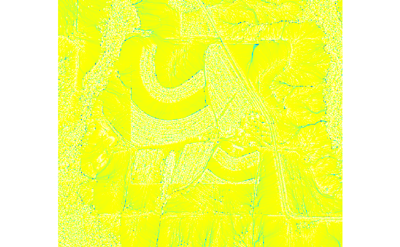

Abstract
A process for fusing lidar and UAV digital terrain models by randomly sampling points from each dataset, combining the points, and interpolating a digital terrain model from the point cloud using the regularized spline with tension.
Methodology
Randomly resample both elevation maps with r.random (with the same number of samples) so that both datasets have a similar spatial distribution and density of points. Optionally, use the elevation map with a smaller extent as a mask for the elevation map with a larger extent using r.random's cover map. Patch the resampled point clouds and interpolate the patched point cloud using v.surf.rst to smoothly fuse both datasets.
The following example demonstrates fusing a bare earth lidar DEM with a UAV DSM. The resulting fused elevation map still has a noticeable transition due to vegetation. Ideally this method for smoothly fusing lidar and UAV data should be used with bare earth DEMs. To compute a bare earth DEM from UAV data use v.lidar.mcc to classify ground points, r.random to fill randomly resample the ground data and fill voids, and v.surf.rst to interpolate the ground data.
fusion@fusion
Script
fusion.pyMap

Statistics
| Min | 92.949333190918 |
| Max | 140.434585571289 |
| Mean | 108.291180165233 |
| Variance | 37.5223495344265 |
depth_timeseries@fusion
Script
depth_timeseries.pyAnimation
